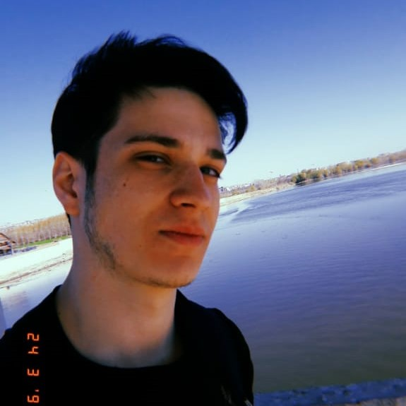

İletişim Bilgilerim
@harun.o.tuc
 harun.o.tuc@gmail.com
harun.o.tuc@gmail.com
@harun.o.tuc
harun.o.tuc@gmail.com Hakkımda
Hemen kısaca kendimden bahsedeyim. Trakya’nın kuzeyinde pek tanınmayan bir şehir olan Kırklareli’nde 2000 yılında doğdum. İlköğretimimi Cumhuriyet İlkokulunda liseyi ise Kırklareli Anadolu Lisesinde tamamladım. Ardından Sakarya Üniversitesi Bilgisayar Mühendisliğini kazandım ve eğitim hayatıma üniversite 1. Sınıf öğrencisi olarak devam ediyorum. 3 yıldır düzenli olarak Fitness ile uğraşıyorum ayrıca futbolu oynamayı ve izlemeyi çok seviyorum. Sıkı bir Fenerbahçe taraftarıyım.